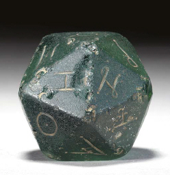

Escriba un programa que pida tres números positivos cada vez más grandes y que diga qué números son múltiplos de otros.
Nota: Los ejemplos siguientes no cubren todas las situaciones posibles.
DETECTOR DE MÚLTIPLOS Escriba tres números enteros crecientes. Le indicaré si alguno es múltiplo de otro. Primer número: 5 Segundo número: 5 Por favor, escriba números crecientes.
DETECTOR DE MÚLTIPLOS Escriba tres números enteros crecientes. Le indicaré si alguno es múltiplo de otro. Primer número: 2 Segundo número: 8 Tercer número: 10 10 y 8 son múltiplos de 2.
DETECTOR DE MÚLTIPLOS Escriba tres números enteros crecientes. Le indicaré si alguno es múltiplo de otro. Primer número: 2 Segundo número: 9 Tercer número: 21 Ningún número es múltiplo de otro.
DETECTOR DE MÚLTIPLOS Escriba tres números enteros crecientes. Le indicaré si alguno es múltiplo de otro. Primer número: 3 Segundo número: 4 Tercer número: 20 20 es múltiplo de 4.
Marcus Cubitus y Julius Humerus, legionarios destinados en el famoso campamento de Babaorum, entretienen sus horas muertas jugando a juegos de dados. Esta vez, el juego consiste en tirar dos dados un número de veces. Cubitus se anota un punto cada vez que los valores de los dados son diferentes y Humerus se anota cinco puntos cuando los valores coinciden. El jugador que obtenga el valor más alto, gana. Escriba un programa que simule una partida de este juego.
JUEGO DE DADOS: IGUALES O DISTINTOS
¿Cuántas veces se van a tirar los dados? 0
¡Al menos hay que tirar los dados una vez!
JUEGO DE DADOS: IGUALES O DISTINTOS
¿Cuántas veces se van a tirar los dados? 6
Tiradas de dados: 2 5 - 2 4 - 2 2 - 1 2 - 5 3 - 1 4 -
Han empatado a 5.
JUEGO DE DADOS: IGUALES O DISTINTOS
¿Cuántas veces se van a tirar los dados? 9
Tiradas de dados: 2 1 - 1 3 - 3 4 - 6 1 - 1 3 - 4 1 - 3 4 - 4 1 - 5 2 -
Ha ganado Cubitus 9 a 0.
JUEGO DE DADOS: IGUALES O DISTINTOS
¿Cuántas veces se van a tirar los dados? 5
Tiradas de dados: 3 6 - 2 4 - 3 3 - 3 4 - 1 1 -
Ha ganado Humerus 10 a 3.
Volvamos atrás en el tiempo, a nuestros amigos Marcus Cubitus y Julius Humerus, legionarios muy aficionados a los juegos de dados. Esta vez juegan a tirar un dado de cien caras mientras saquen valores menores que el primer valor obtenido. El jugador que tira más veces el dado, gana. Escriba un programa que simule una partida de este juego.
JUEGO DADO A TIERRA Cubitus: 88 39 44 78 88 Humerus: 19 66 Ha ganado Cubitus.
JUEGO DADO A TIERRA Cubitus: 56 67 Humerus: 15 28 Han empatado.
JUEGO DADO A TIERRA Cubitus: 42 100 Humerus: 84 46 9 96 Ha ganado Humerus.
Escriba dos programas que generen las siguientes imágenes a partir de las plantillas siguientes:
<!DOCTYPE html>
<html lang="es">
<head>
<meta charset="utf-8">
<title>Ejercicio 4-1. SVG. Examen. Python</title>
<meta name="viewport" content="width=device-width, initial-scale=1.0">
</head>
<body>
<svg version="1.1" xmlns="http://www.w3.org/2000/svg"
width="320" height="320" viewBox="-10 -10 320 320"
style="border: black 1px solid">
</svg>
</body>
</html>
Los colores empleados en esta imagen son: DodgerBlue , MediumSeaGreen , RebeccaPurple , Red , SaddleBrown , Tomato , Yellow
<!DOCTYPE html>
<html lang="es">
<head>
<meta charset="utf-8">
<title>Ejercicio 4-2. SVG. Examen. Python</title>
<meta name="viewport" content="width=device-width, initial-scale=1.0">
</head>
<body>
<svg version="1.1" xmlns="http://www.w3.org/2000/svg"
width="320" height="320" viewBox="-160 -160 320 320"
style="border: black 1px solid">
</svg>
</body>
</html>
Los colores empleados en esta imagen son: tomato , green , black , white
Escriba un programa que genere la siguiente imagen a partir de la plantilla siguiente utilizando bucles:
<!DOCTYPE html>
<html lang="es">
<head>
<meta charset="utf-8">
<title>Ejercicio 5-1. SVG. Examen. Python</title>
<meta name="viewport" content="width=device-width, initial-scale=1.0">
</head>
<body>
<svg version="1.1" xmlns="http://www.w3.org/2000/svg"
width="320" height="320" viewBox="-10 -10 320 320"
style="border: black 1px solid">
</svg>
</body>
</html>
Los colores empleados en esta imagen son: hwb(0 80% 20%) , black , white